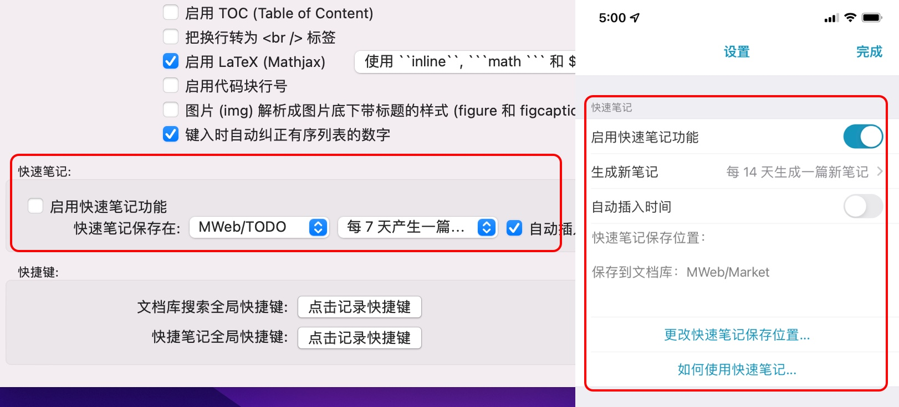
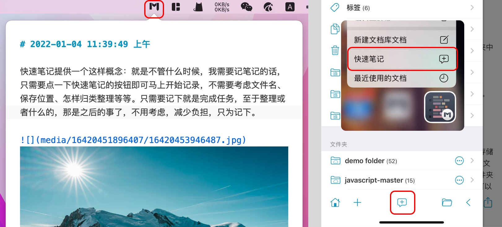

快速笔记提供一个这样概念：就是不管什么时候，我需要记笔记的话，只需要点一下快速笔记的按钮即可马上开始记录，不需要考虑文件名、保存位置、怎样归类整理等等。只需要记下就是完成任务，至于整理或者什么的，那是之后的事了，不用考虑，减少负担，只为记下。
快速笔记功能本质上是按一定的时间段（天）来新增文档并保存到设定好的文档库的分类或者文件夹（仅 iPadOS/iOS 支持）。主要是达成，在想要记录时文字或者图片时，只需要点击一下按钮即可马上开始。
开启快速笔记功能
此功能默认是关闭的，如果要开启使用，在 macOS 版 MWeb 中，请在 偏好设置 - 通用设置 中开启；在 iPadOS/iOS 版 MWeb 中，请在 设置页 - 快速笔记 中开启。如下图所示分别为 macOS 和 iOS 中的设置界面。

你可以设置快速笔记保存在那个分类和产生一篇新文档的时间，如果用得频繁就一天一篇，否则可以选择 3、5、7 天等等。这其中，有一个 自动插入时间 的复选框，如果勾选了，会在记录快速笔记时，自动增加一行当前的时间做为标题。
使用快速笔记功能
在 macOS 版 MWeb 中，如果开启了快速笔记，会在状态栏中显示一个 “M” 的图标的按钮，点击后，即可使用快速笔记，如下图左边的图所示；在 iPadOS/iOS 版 MWeb 中，如果 MWeb 未打开，可以长按 MWeb 图标，选择 “快速笔记” 来使用快速笔记，如果 MWeb 已打开，可以直接按导航页底部中间那个按钮来使用快速笔记，如下图右边的图的红框所示。
